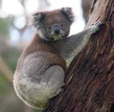

Home
Lenguajes de programacion
Experiencia en el
Tec
de Monterrey
Con motivo de los 77 años del
Tec
.
clase de aprender.
Mi twiter
Mi twiter en otra pagina

Cosas de mi
Alumno del tec desde el 2018
De Monterrey
20 years
Mis lenguajes
C++
Java
Python